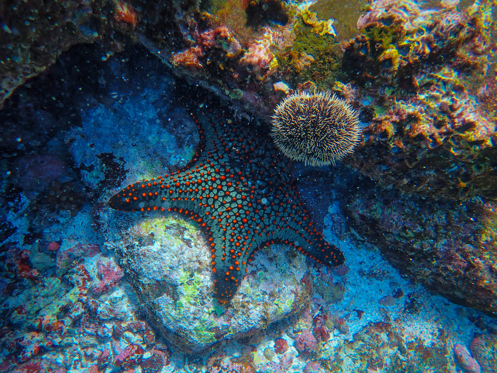

Nature's
Pathway
to
Self-Discovery

Amidst the rustling leaves and the serene whisper of flowing
streams, nature unfolds a path of introspection.
As you wander through the wilderness, every step becomes a
journey inward, revealing layers of the self once hidden.

In the heart of nature, we don't just find scenic beauty; we
find ourselves, raw and unfiltered.

Under the canopy of age-old trees and beneath the vast, open
skies, nature becomes the mirror reflecting our innermost
selves.
Every trail we tread, every horizon we chase, isn't just about
the land or the horizon but the discovery of hidden fragments
of our soul.
Amid the symphony of chirping birds and the gentle embrace of
the wind, we not only reconnect with the world but also with
the deepest corners of our being, pristine and untouched.